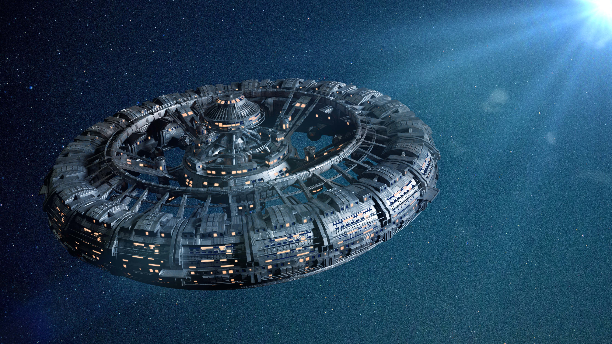
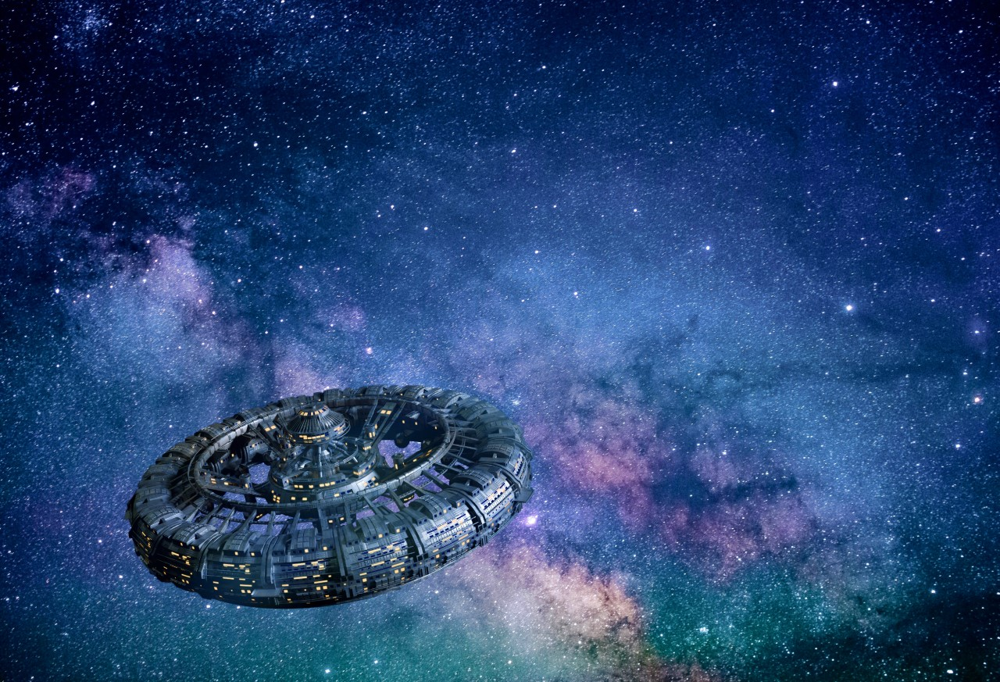

Billedredigering

Et af vores produktkrav, var at
inddrage et billede med blikfang.
Vi kunne godt lide rumstationen, men var ikke
glade for baggrunden, da den ikke var
farverig nok. Jeg redigerede derfor
rumstationen ind på en anden baggrund.
Farverne passede i forvejen godt sammen,
så der skulle kun småjusteres på belysning
og farvebalance.

Jeg placerede rumstationen ved det gyldne snit,
for at skabe blikfang.